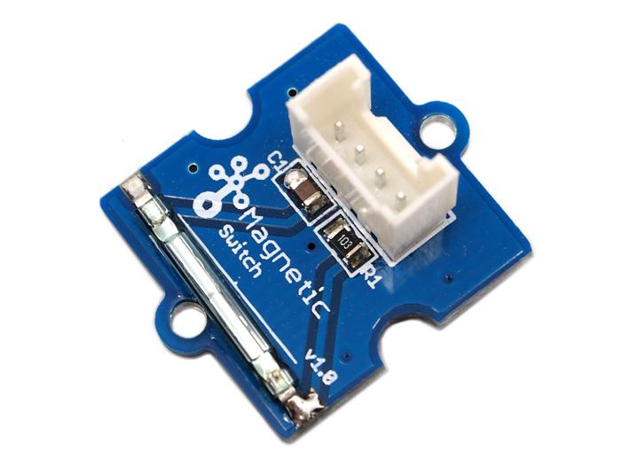
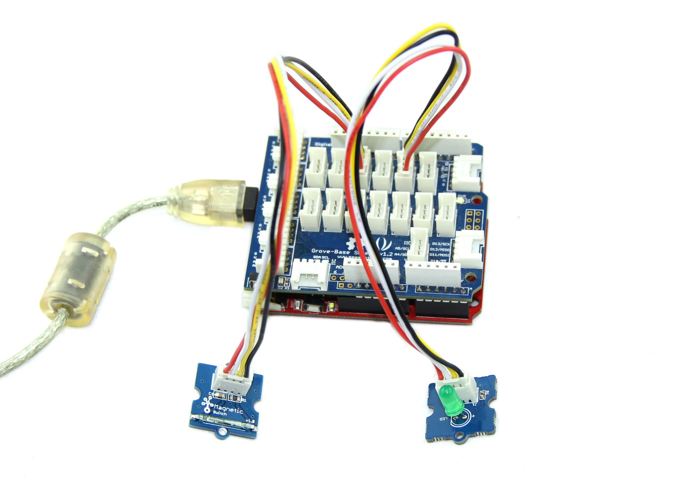
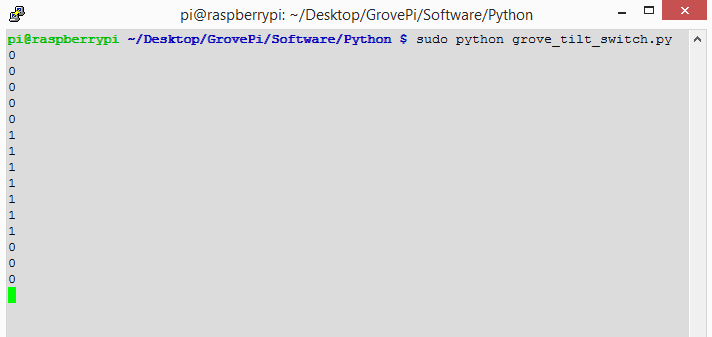

This is a Grove interface compatible Magnetic switch module. It is based on encapsulated dry reed switch CT10. CT10 is single-pole, single throw (SPST) type, having normally open ruthenium contacts. The sensor is a double-ended type and may be actuated with an electromagnet, a permanent magnet or a combination of both. The magnetic switch is a wonderful tool for designers who would like to turn a circuit on and off based on proximity.
Model:COM11335P

| Items | Min | Norm | Max | Unit |
| Working Voltage | 4.75 | 5.0 | 5.25 | V |
| Switched Power | 10 | W | ||
| Switched Voltage AC,RMS value(max) | < 140 | V | ||
| Switched Current DC | < 500 | mA | ||
| Carry Current DC | < 0.5 | A | ||
| Contact Resistance | <200 | mΩ | ||
| Insulation Resistance | >106 | MΩ | ||
| Operating Temperature | -40 | - | 125 | ℃ |
| Operate Range | 10 | - | 40 | AT |
The SIG pin of the module output LOW normally. When a magnet approaches the switch, the magnetic switch close and the SIG pin output HIGH.
The following sketch demonstrates a simple application of using the Magnetic switch to control the led. When you put a magnet that has enough magnetic power close to the module, the switch is closed .Then the SIG pin out put a high voltage. You can use this to control the led.
As the picture on the below indicates, the Magnetic switch is connected to digital port 9 of the Grove - Basic Shield and the LED is connected to digital port 13. When there is Magnetic approaches the switch, the SIG pin output a High voltage. Then the LED light. The hardware installation is as follows:

/*******************************************************************************/
/*macro definitions of magnetic pin and LED pin*/
#define MAGNECTIC_SWITCH 9
#define LED 13//the on board LED of the Arduino or Seeeduino
void setup()
{
pinsInit();
}
void loop()
{
if(isNearMagnet())//if the magnetic switch is near the magnet?
{
turnOnLED();
}
else
{
turnOffLED();
}
}
void pinsInit()
{
pinMode(MAGNECTIC_SWITCH, INPUT);
pinMode(LED,OUTPUT);
}
/*If the magnetic switch is near the magnet, it will return ture, */
/*otherwise it will return false */
boolean isNearMagnet()
{
int sensorValue = digitalRead(MAGNECTIC_SWITCH);
if(sensorValue == HIGH)//if the sensor value is HIGH?
{
return true;//yes,return ture
}
else
{
return false;//no,return false
}
}
void turnOnLED()
{
digitalWrite(LED,HIGH);
}
void turnOffLED()
{
digitalWrite(LED,LOW);
}
1.You should have got a raspberry pi and a grovepi or grovepi+.
2.You should have completed configuring the development enviroment, otherwise follow here.
3.Connection
4.Navigate to the demos' directory:
cd yourpath/GrovePi/Software/Python/
nano grovepi_tilt_switch.py # "Ctrl+x" to exit #
import time
import grovepi
# Connect the Grove Tilt Switch to digital port D3
# SIG,NC,VCC,GND
tilt_switch = 3
grovepi.pinMode(tilt_switch,"INPUT")
while True:
try:
print grovepi.digitalRead(tilt_switch)
time.sleep(.5)
except IOError:
print "Error"
5.Run the demo.
sudo python grove_tilt_switch.py
6.Result
Put a magnet upon the sensor, the SIG pin will output HIGH. 
| Revision | Descriptions | Release |
|---|---|---|
| Grove - Magnetic Switch v1.0 | Initial public release designed for Grove module | Jan 12, 2011 |
If you have questions or other better design ideas, you can go to our forum or wish to discuss.
Copyright (c) 2008-2016 Seeed Development Limited (www.seeedstudio.com / www.seeed.cc)